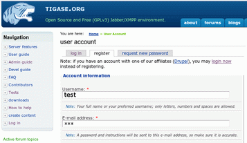

Artur Hefczyc <artur.hefczyc@tigase.net> v2.0, June 2014: Reformatted for AsciiDoc. :toc: :numbered: :website: http://tigase.net :Date: 2009-11-25 15:51
MSN transport is a separate module which allows you to connect to your MSN account and contact other people on the MSN network from your Jabber client. We use PyMSN-t application as a MSN transport which is a separate project from Tigase server. Both applications integrate very well and detailed configuration instructions are available in the Admin Guide.

At the moment the MSN transport installed on tigase.org server is available for local users only.
You also need an account on Hotmail’s server and a Jabber/XMPP client of your choice:
There are many other clients available…
Here are instructions on how to use the MSN transport on tigase.org with different Jabber/XMPP clients.
The first and most important thing to note is that you can not register an account on tigase.org server using your Jabber client. You have to create a new account using Tigase website. This is because Tigase website (which runs on Drupal) shares account information with the Jabber service and all account management is done via the website interface.
All Jabber/XMPP capable clients can use MSN transport as it needs very basic Jabber/XMPP protocol features. Unfortunately, some clients, especially multi-protocol clients like Pidgin don’t fully support the protocol and cannot initialize MSN transport properly. There is a workaround though. Again, using what Tigase Website offers, you can initialize MSN transport and then switch back to your favorite client.
Let’s say we have already requested a test account on Tigase website with password *** and we also have a MSN account: kobit12@hotmail.com with password: *\**\**\****.